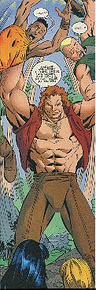
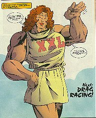
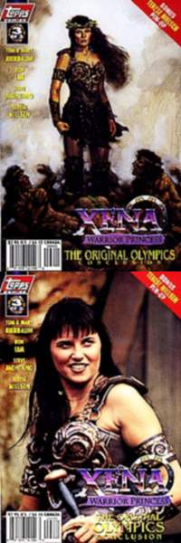
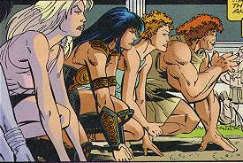

{kind=link}

Xena: Warrior Princess/The Original Olympics #1 (of 3)
Title: Xena and the Original Olympics: Part 1
Date: June 1998
Actual Release: 1 July 1998
Pages: 32 (22 story) plus pull-out poster
Cover Price: $2.95
Writer: Tom and Mary Bierbaum
Pencils: Ron Lim
Inks: Steve Montano
Letters: John Workman
Colors: Digital Chameleon
Editor: Dwight Jon Zimmerman
Painted Cover: Terese Nielsen
Photo Cover: Unknown
NOTE: Xena: Warrior Princess created by Robert Tapert and John Schulian
OVERVIEW:
Xena and Gabrielle stop some punks from beating up a kid to get his sandals. Turns out the kid is wearing Samson Signature sandals, which are worth 150 Dinars, and that's why he's meeting with Xena and Gabrielle. He works in the factory they are produced in, and the conditions in the factory are terrible.
As he explains this to the pair, the punks attack again but are stopped by a very large man, who tosses them like dolls, then dismisses Xena's complaints about the factory conditions. He's on his way to the Olympic games, and can't be bothered.
Meanwhile, at the Olympics, Salmoneus is trying to convince Arthur, an althlete from Britanny, to allow him to put *his* name on sandals. Arthur refuses.

Xena and Gabrielle arrive at the factory to find it run by snake-haired monsters who whip the workers. They put the factory out of commission and turn the monsters over to the local authorities.
At the Olympics, Arthur and Lance are walking through a market to the practice court. There they meet Samson, who is rude and arrogant. Arthur wishes him luck out of politeness, then is approached by Delilah, who offers to become Arthur's agent. He turns her down.
Arriving at the Olympics, Xena is approached by Jusduous, who tells her he owns the sandal shop that she raided. He wants to reward her for rescuing his workers from their overlords. Xena doesn't buy his story, and tells him that if he's sincere, he should take Samson's name off the sandals. When he protests at Samson's probable response, she goes to talk to Samson.
The talk doesn't go well. Samson tosses Gabrielle like he tossed the two punks. Luckily, Arthur is there to catch her. Arthur tells Samson that they will settle the matter on the field of competition. Arthur says he'll beat Samson in every event, so Samson won't be able to give away sandals with his name on them. Xena says she'll back him up, only to learn that women aren't allowed at the games.
This gets Gabrielle annoyed, who starts, after a suggestion by Arthur, to prepare an Olympic games that includes everyone... especially her Amazon warriors.
COMMENTS:
One of the better covers, even if it doesn't really have much to do with the story in the book (yet). This is not the same cover as was solicited in Previews Magazine. Click here to look at the original cover. See who is missing?
Yes, that's right. Hercules was due to appear in this mini, but got cut out and replaced by Arthur. Presumably this is the fabled King Arthur of the legends, and his sidekick (!) Lancelot. No idea why Herc didn't make the cut.
The heavy-handed commentary of the story seems a bit much. Luckily, it's not the only plot. Sadly, it is the driving force of the story. We'll just have to see how it plays out in the last two issues.
CONCLUSION:
A decent story with a heavy moral dilemma. If you don't mind being preached at, a good read.
Review Date 5 July 1998 by Laura Gjovaag
Xena: Warrior Princess/The Original Olympics #2 (of 3)
Title: Xena and the Original Olympics: Part 2
Date: July 1998
Actual Release: 5 Aug 1998
Pages: 32 (22 story) plus pull-out poster
Cover Price: $2.95
Writer: Tom and Mary Bierbaum
Pencils: Ron Lim
Inks: Steve Montano
Letters: John Workman
Colors: Digital Chameleon
Editor: Dwight Jon Zimmerman
Painted Cover: Terese Nielsen
Photo Cover: Unknown
NOTE: Xena: Warrior Princess created by Robert Tapert and John Schulian
OVERVIEW:
Gabrielle is being attacked by a horde of men who want to buy tickets to the Women's Olympics. Gabrielle has explained that the tickets are sold out, but they don't want to take no for an answer. Especially since Gabrielle has enticed the greatest women in all of Greece to take part, including some of the goddesses. Xena rescues Gabrielle, and expresses wonder at the achievements. Gabrielle just wonders how the regular olympics are doing...
Not too hot, as Samson notes. The stands are empty, the crowds elsewhere. They start the dash anyway. In the meantime, Joxer is practicing the hammer throw, and manages to endanger the crowd. Arthur turns from his race, letting Samson win, and rescues Joxer and the crowd. Joxer explains that he couldn't let go of the hammer, his hands were glued to it. He suspects sabotage, and blames the women.
The men, led by Samson, go to confront the women and convince them to stop competing. Xena points out that her time in the dash beat out Samson's time, and Gabrielle strikes a deal: They'll keep track of who does best in all the events. If the men do better more often, the women will publicly proclaim male superiority. If the women do better, the men will eliminate all endorsements, competing naked in future Olympics.
Back at the sandal factory, the nasty snake-haired bosses are back. And they've brought friends.
Xena beats Samson's record in the long jump, and Samson checks to make sure the Mile Run is going to be fixed so Arthur can't win. It is, and as the race begins the stands fall, which distract Arthur, who cares more about saving lives. Samson wins the race, but Xena, off in the women's olympics, beats his time anyway.
Jusduous, the sandal shop owner, tells Delilah that, although she's doing a good job fixing the men's olympics, the women are still getting the glory. So Delilah poisons the women with bad sausages. They still manage to beat every record the men set.
Delilah, inspired by Samson's claims that he has no competition, dresses Samson as a women to compete against Xena directly.
COMMENTS:

Another issue, another good cover.
The fact that Gabrielle convinced some of the goddesses to compete is a rather neat trick. No wonder the crowds are falling all over themselves trying to get tickets. Gabrielle also encourages the competing women to dress slightly revealingly, so as to draw more fans over this way.
Arthur mentions that Joxer shouldn't be allowed near dangerous projectiles. This made me look at all the images of Arthur and compare him to what Hercules would've looked like. Arthur is definitely Herc, changed suddenly for some unknown reason.
Samson in drag is amusing. Reminds me of the story of the modern olympics, in which sex tests were started in 1968, and certain Russian female althletes suddenly disappeared from the international athletics scene.
CONCLUSION:
A good middle issue, setting up for a definite grand finale.
Review Date 27 Nov 1998 by Laura Gjovaag

Xena: Warrior Princess/The Original Olympics #3 (of 3)
Title: Xena and the Original Olympics: Part 2
Date: August 1998
Actual Release: ---
Pages: 32 (22 story) plus pull-out poster
Cover Price: $2.95
Writer: Tom and Mary Bierbaum
Pencils: Ron Lim
Inks: Steve Montano
Letters: John Workman
Colors: Digital Chameleon
Editor: Dwight Jon Zimmerman
Painted Cover: Terese Nielsen
Photo Cover: Unknown
NOTE: Xena: Warrior Princess created by Robert Tapert and John Schulian
OVERVIEW:
Samson, competing as "Samantha", is making a fool out of himself. Xena wants to beat him fair and square though. But she doesn't know about Delilah's distractions. In the stadium race, the distraction is a minotaur that charges the stands. Xena takes care of it, letting Samantha win the race.
After the race, Samantha fires Delilah as his, er, HER agent. Delilah gets her revenge, though. She sneaks into his tent and cuts off all his hair. The bald Samson is quickly exposed as a fraud, and is buried in a pile of sandals from now dissatisfied customers.
Gabrielle and Xena congratulate Delilah on exposing the truth. She's going to be turned over to the Amazon Council for judgement, but doesn't care, as long as Samson gets his too.
Gabrielle suddenly realizes that Jusduous, the sandal shop owner, is a bad guy, and they were relying on him to clean up the shop. Xena gathers up Arthur, and they go to take out the big ugly monsters. Samson joins in, after realizing that he's not going to get his money from them.
Samson rebuilds the factory, which Delilah agrees to run, rather than pay for their crimes in a different way. Arthur heads back to England, and Salmonues tries to make a quick buck.
COMMENTS:

Gabrielle doesn't understand why Xena would let Samson continue to compete. Xena just figures that they never said he couldn't, and besides, the longer he wore women's clothing, the more of a fool he would look like when his ruse was finally exposed.
Samson rebuilds the sandal factory rather than have Gabrielle sing the praises of Samson the Drag Racer. Delilah agrees to use her smarts to help out the factory workers rather than serve a few terms as a slave-laborer.
CONCLUSION:
A fun bit of fluffy story.
Review Date 27 Nov 1998 by Laura Gjovaag